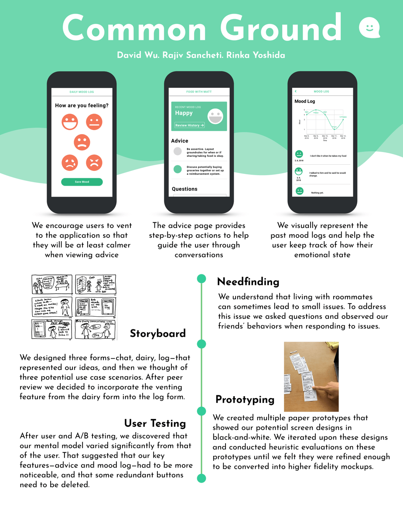
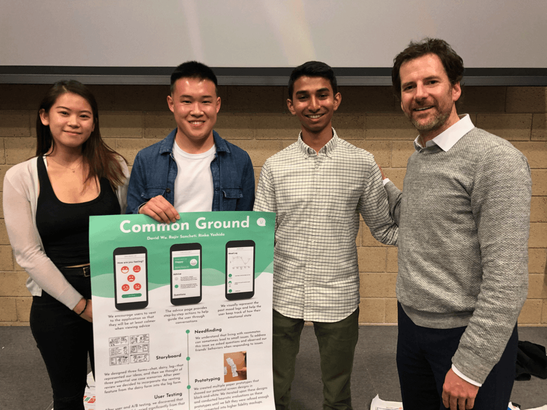

Thank you so much for reading. Now check out some more of my projects. Or don’t and watch some Netflix…


Our inspiration for this app came naturally as we had all before dealt with some form of roommate conflict. Looking back at these occasions we realized that if we had just had a polite discussion with the other person many of these issues may not have escalated an caused unnecessary amounts of stress and angst. Although we had been told to address issues quickly from groups like Housing and Dining and our House Advisors, sometimes we felt like we just did not know how to even start a conversation with the other person. Thus our idea of personalizing the app for specific topics seemed to take away this major hurdle.
I believe that this experience was also a great way for me to continue to learn about working in teams and the dynamics between those who are more inclined towards programming and designers. Though we did not agree on every issue, our most effective solution was assigning tasks to a certain leader and giving them accountability over that region of the project. This technique led to us working more cohesively and complete all deadlines on-time. Another aspect of the team process that I enjoyed was the different perspectives each of us brought to the design table. All of these insights and critiques helped us build a stronger and more seamless product.
In the future I would like to continue to explore how human emotion affects decision making, and how we as designers can present information in the most empathetic way. Below is our final project poster and team picture (with our Professor Scott Klemmer). We won most innovative design/idea at the UCSD design competition.
I believe that this experience was also a great way for me to continue to learn about working in teams and the dynamics between those who are more inclined towards programming and designers. Though we did not agree on every issue, our most effective solution was assigning tasks to a certain leader and giving them accountability over that region of the project. This technique led to us working more cohesively and complete all deadlines on-time. Another aspect of the team process that I enjoyed was the different perspectives each of us brought to the design table. All of these insights and critiques helped us build a stronger and more seamless product.
In the future I would like to continue to explore how human emotion affects decision making, and how we as designers can present information in the most empathetic way. Below is our final project poster and team picture (with our Professor Scott Klemmer). We won most innovative design/idea at the UCSD design competition.
Reflection
Based on feedback from our user testing and wireframes we completed the first version of the Common Ground web application. We then began to code this version of the application and it is currently available to try and test online.
Final Design
Daily Mood Splash Screen: During testing upon arriving to the daily mood log page, users often asked if this questions pertained to their current state of mind or how they were specifically feeling about the issue at hand. We asked the testers what they thought and most believed it was questioning their mood related to the specific issue, however they were not 100% sure. To help new users we added a splash screen that would appear once for any new user prior to logging their first daily mood.
3. Daily Mood Logging

Mood Log Button: While observing our testers use the application we were surprised by how few tapped into the mood log page. Most users post testing said that they did not know that the mood log graphic was actually a button and thought it just dynamically changed its image everyday. Because the mood log was a vital part of our app, we soon redesigned the graphic to resemble more of a button while still keeping the other essential information. Through an A/B test run with Google Analytics we found that the clickthrough rate increased with the updated button design.
2. The Mood Log Button
Issue/Task Switcher: Originally we had envisioned that users would be able to switch through tasks in an Instagram inspired task switcher. We also had assumed that users would likely not have multiple issues open at once. However, through user testing we found that both of our assumptions were clearly incorrect. Firstly, users rarely knew what the down arrow in the header did and could not find out how to switch to another issue. Secondly in interviews after testing, most users said that if they were to use the app they would like have around 2-3 issues open at once. From our observations we were motivated to make a major change in the UI to alleviate many of the aforementioned issues. In our new design we scrapped the drop down menu and instead dedicated an entire page to the issue switcher. This page also became our new homepage as it helped give users a clear path when opening the application.
1. The Task Switcher
After finishing the wire framing, we began building a semi-functional application which could be tested (some of features at this point utilized the Wizard of Oz method to work). Before starting testing we wrote a comprehensive user testing plan to help avoid observer bias. We were particularly interested in the user flow of creating a new issue and also how users responded to the issue homepage/dropdown issue switcher. Below are our findings and the changes we designed and implemented to alleviate these issues.
User Testing
At this point we determined that it would be useful to combine aspects of both of our paper prototypes. We would combine the mood logger from the first prototype with the questions and unique suggestions from the second prototype. We then began wire framing what would be our first real prototypes.
Wireframing
Log Based Conflict Resolution: After reviewing the heuristic evaluation of our mood log app we determined that there were a couple places where users were getting stuck. Most common was that when arriving to the mood log page testers often chose multiple moods, when we had pictured each would only choose one mood. Users remarked that often their emotions did not clearly fit under one predetermined category so they liked to choose multiple options. Secondly, users rarely tapped into their recommendations and said that they would rather have summarized important information instead of having to visit a new page.
Advisor Based Conflict Resolution: While observing testers use the paper prototypes we witnessed the testers make a few mental model errors. Most testers upon clicking the save plan button did not know where to go in the side menu to find where the plan was saved. Many also thought that their chat log would not be saved when in actuality it was. Finally, users also requested that they be able to rate their counselor so that they could make a positive impact on the future of the application.
Advisor Based Conflict Resolution: While observing testers use the paper prototypes we witnessed the testers make a few mental model errors. Most testers upon clicking the save plan button did not know where to go in the side menu to find where the plan was saved. Many also thought that their chat log would not be saved when in actuality it was. Finally, users also requested that they be able to rate their counselor so that they could make a positive impact on the future of the application.
Advisor Based Conflict Resolution
Log Based Conflict Resolution
The next step in the design process was building and testing paper prototypes of our two storyboards. This was a very interesting experience for me because I had never made a paper prototype before and had never conducted this type of user testing. It has initially hard not to focus on the little details while making the paper prototype but I eventually was able to focus on the higher level UX design. Below are videos of the two paper prototypes in action and below those are our findings from user testing. We tested each paper prototype on three users.
Paper Prototyping
Log Based Conflict Resolution: The mood logger storyboard centers around users tracking their mood and then displaying users with a data visualization of the mood. From these graphics users can themselves decide whether it would be helpful to talk to their roommate. We liked this idea because the mood logger gave users a place to vent their thoughts/feeling and understand long term trends before making a decision. However this method did not fully capture the essence of our problem statement which was also to provide users with tips on how to talk with their roommate.
Advisor Based Conflict Resolution: The advisor based service is geared towards users chatting with a counselor to help resolve their issue. Based on responses from counselors users would be able to follow a curated plan on how to resolve their specific issue. We were excited by the potential of this solution because if offered users a chance to get feedback that was unique to their situation. However we did notice a few drawbacks which included the fact that users might only chat with advisors when their emotions were high (thus at a time when they might not make the best decisions) and also that it would be expensive to have advisors individually contact each user.
Advisor Based Conflict Resolution: The advisor based service is geared towards users chatting with a counselor to help resolve their issue. Based on responses from counselors users would be able to follow a curated plan on how to resolve their specific issue. We were excited by the potential of this solution because if offered users a chance to get feedback that was unique to their situation. However we did notice a few drawbacks which included the fact that users might only chat with advisors when their emotions were high (thus at a time when they might not make the best decisions) and also that it would be expensive to have advisors individually contact each user.
Advisor Based Conflict Resolution
Log Based Conflict Resolution
To begin the exploratory design phase we decided to start by storyboarding potential solutions to our problem statement. Instead of diving straight into the nitty-gritty of the UI elements and UX we decided that it would be more prudent to instead spend time researching. We were guided by the quote "A year in the lab saves an hour in the library". Below are two of our storyboards on how to address the problem.
Storyboarding
Problem Statement
Roommates should be provided with curated suggestions on how to resolve conflicts based on their mood and previous actions they have taken.
We have all had that bad roommate. They were probably either smelly, ate your food or even had guests over too often. These annoying roommates could be your partner, best-friend, or even a complete stranger however the underlying issue often remains the same. You don't know what to say to them so the issue simmers under the surface as your tension rises.
However avoiding these difficult conversations can lead to the escalation of small issues. After speaking to many other college students and reflecting on past life experiences it seemed obvious that a small polite conversation with a potentially "annoying" roommate would have resolved most issues early-on. Although tips on how to engage roommates in conversations exist online, they can be hard to find and often are not unique for certain situations.
However avoiding these difficult conversations can lead to the escalation of small issues. After speaking to many other college students and reflecting on past life experiences it seemed obvious that a small polite conversation with a potentially "annoying" roommate would have resolved most issues early-on. Although tips on how to engage roommates in conversations exist online, they can be hard to find and often are not unique for certain situations.
Background